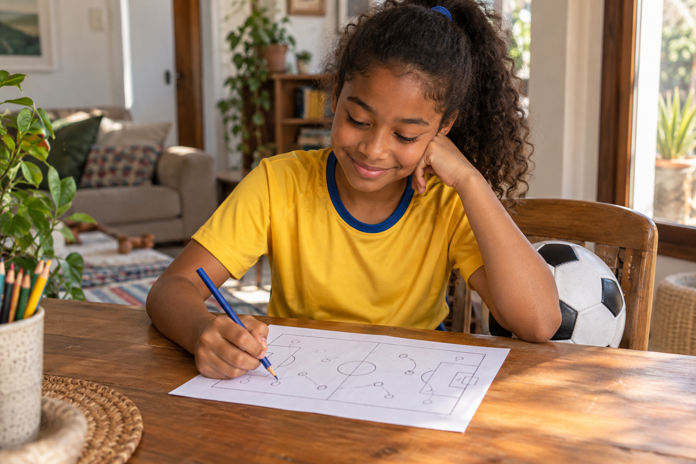
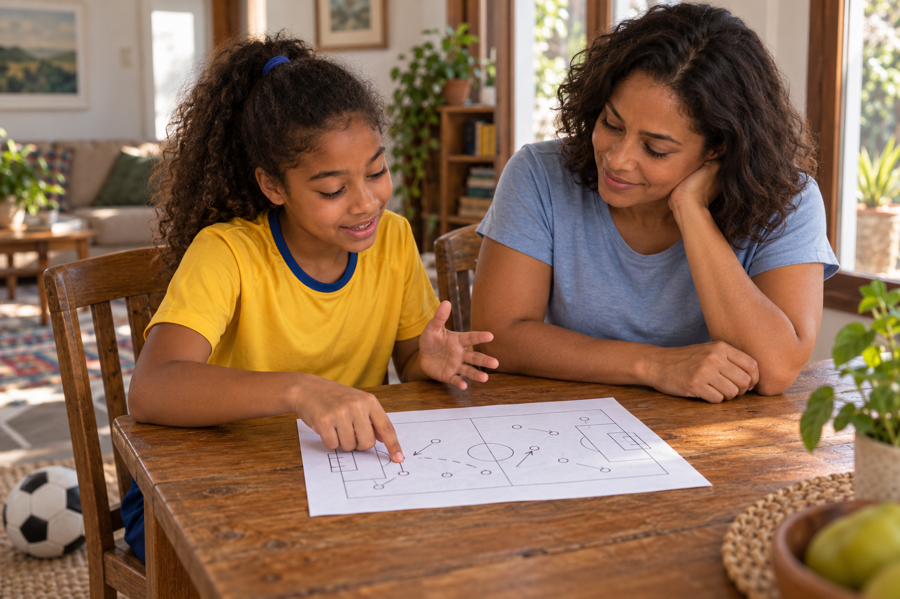
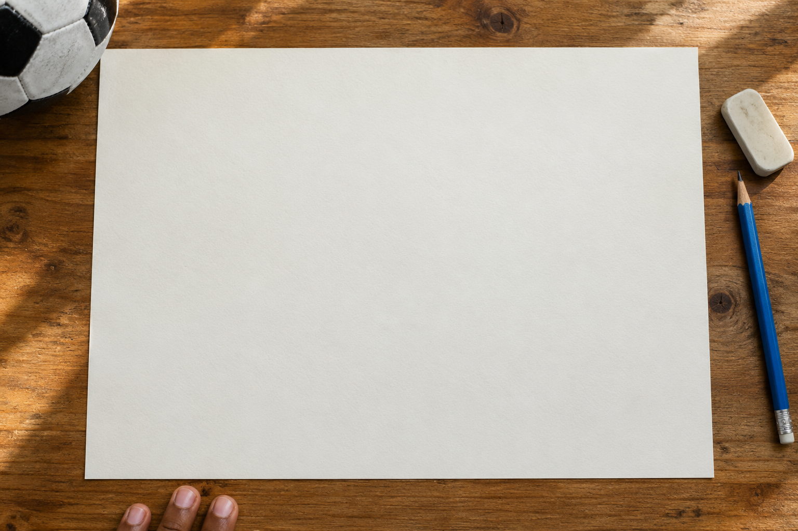
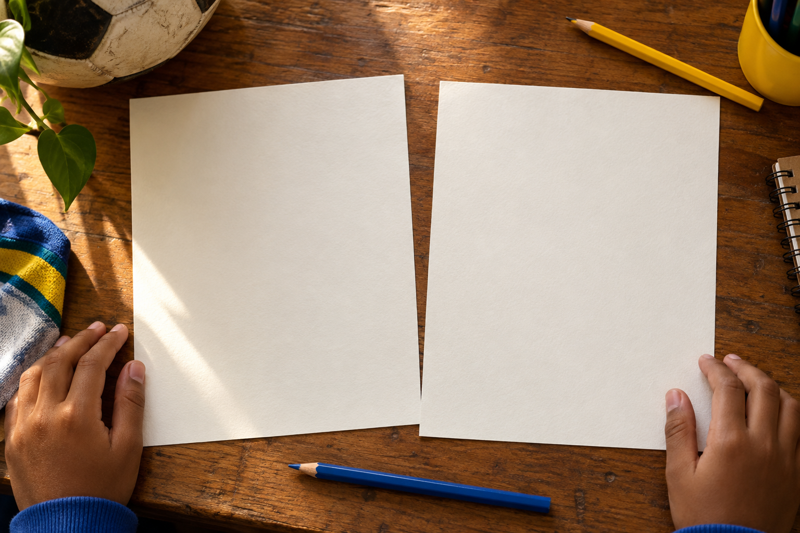
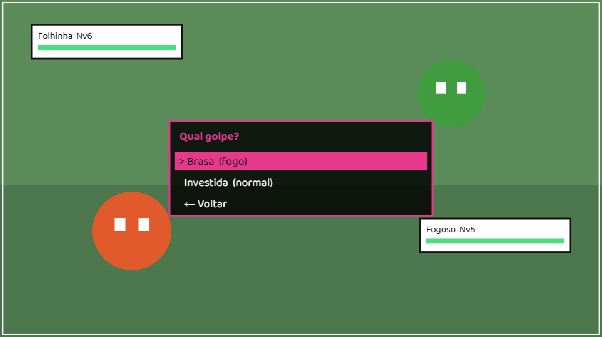
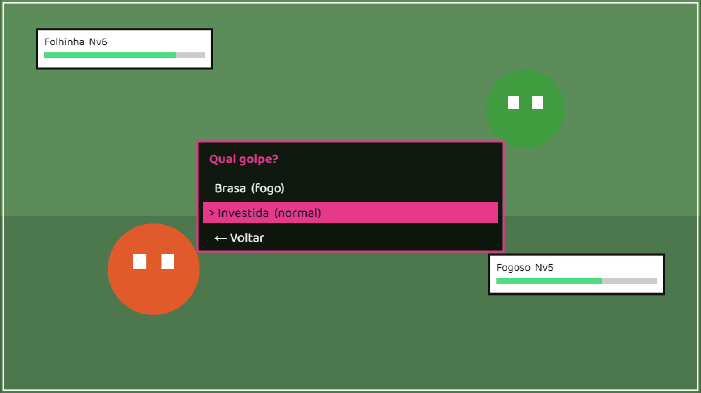
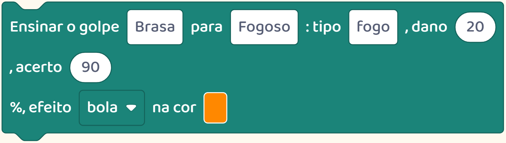
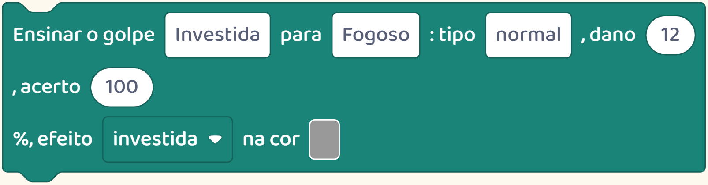
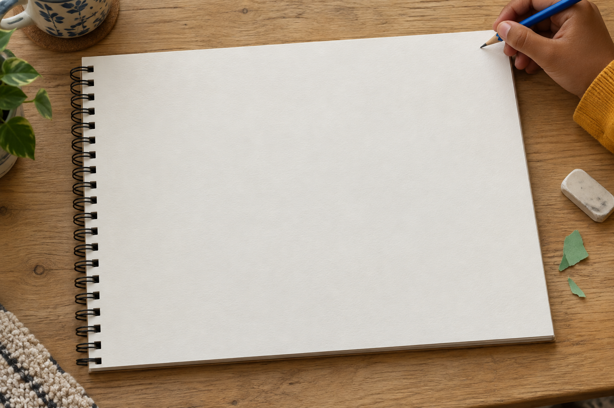
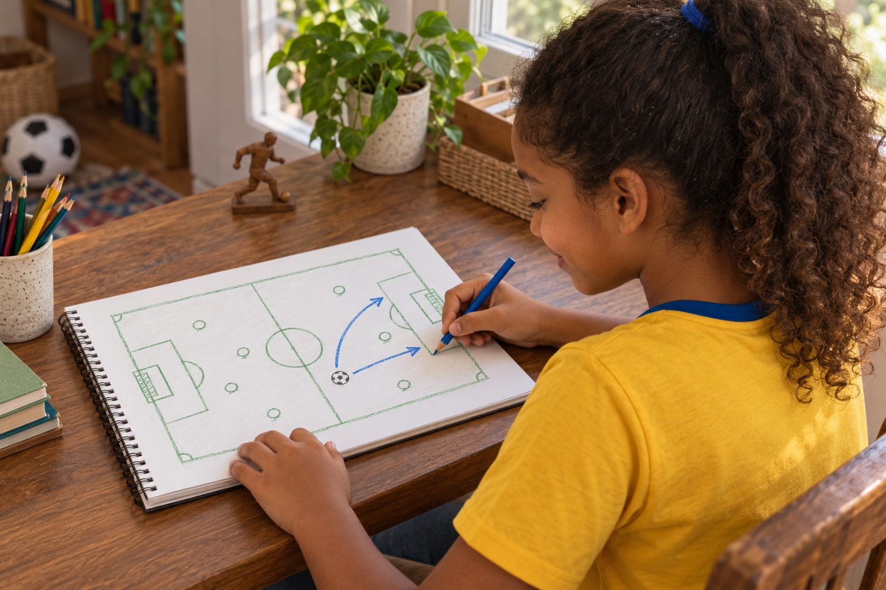

Seu filho adora futebol.
Imagine ele inventando as regras de um jogo de futebol próprio.

Seu filho adora futebol.
Imagine ele inventando as regras de um jogo de futebol próprio.

O interesse dele pode dar ideias para criar.

Vale perguntar: como seria a partida? O que o jogador poderia fazer?
Talvez ele queira um chute muito forte de longe.

Depois precisa pensar: esse chute vai acertar sempre ou será mais difícil de usar?
Essa escolha muda a partida.

Se uma opção é melhor em tudo, talvez as outras deixem de ter utilidade.
Veja uma decisão parecida neste jogo de bichinhos da nossa plataforma.

Bichinhos do QuintalUm personagem tem dois ataques diferentes.
Um ataque tira mais vida, mas às vezes erra.

O outro tira menos vida e sempre acerta. O jogador escolhe qual usar.
Quem cria precisa definir esses valores e testar a batalha.


As opções ficaram interessantes? Há motivo para usar as duas?
Seu filho pode fazer perguntas assim sobre o jogo que imaginar.

O assunto de que gosta vira uma oportunidade de inventar regras e experimentar escolhas.
Aqui mostramos o que as crianças podem criar a partir dos próprios interesses.

Siga o perfil para conhecer mais possibilidades.